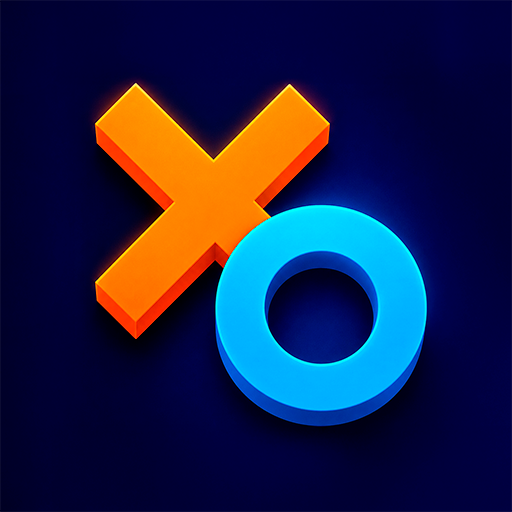
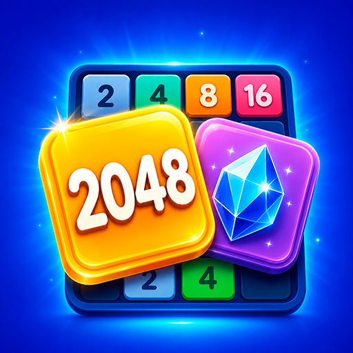

Игры Coralik
Простые мобильные игры с понятными правилами, гибкими настройками и комфортной рекламой без постоянных прерываний.


То есть: иконку крестиков-ноликов нужно сохранить как icon_tictactoe.png иконку 2048 нужно сохранить как icon_2048.png Если не хотите скачивать файл, вот суть правки Внутри карточки игры нужно добавить блок:Простые мобильные игры с понятными правилами, гибкими настройками и комфортной рекламой без постоянных прерываний.